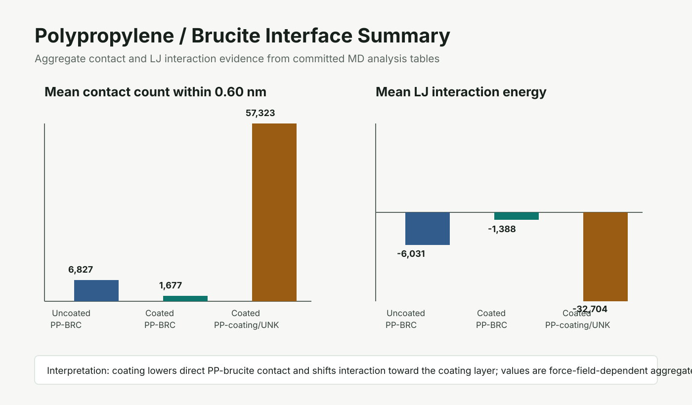

Projects
Project work
Computational chemistry projects in CADD/QSAR, antibody sequence ML, reaction-yield modeling, molecular simulation, DFT, and HPC workflows.
Main work


Additional computational chemistry
DFT, MD, periodic calculations, and HPC workflows from Eva's materials and molecular-simulation work.

DFT flame-retardant modeling
ORCA and CREST workflows for conformer handling, bond-length analysis, nonbonded contacts, and candidate interpretation.
Periodic DFT
Quantum ESPRESSO inputs, CIF conversion utilities, relaxation outputs, phonon setup, and restart scripts.